|
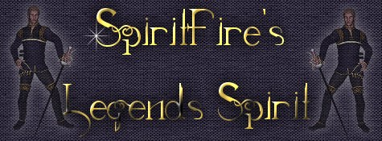
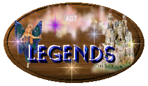
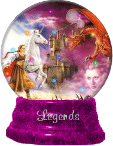
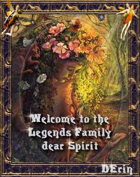
I just receieved this wonderful award today!
October, 20, 2001
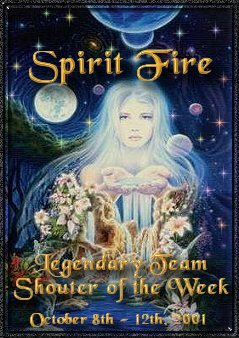
I am so honored!
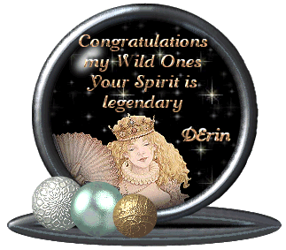
Thanks D'Erin! It's beautiful!
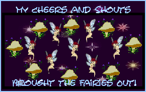
Rec'd this Awesome Award 02-11-02!!
Switcheroo Shout It Out 2002!
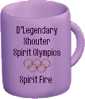
A gift from Spirit SiameseKitty for all the
Cheering I've done the last week!!
2-08-02! :o)
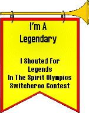
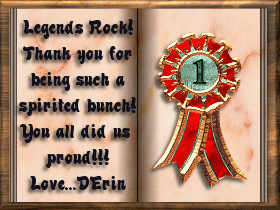
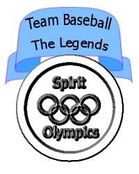
I got to pass the Olumpic Torch!
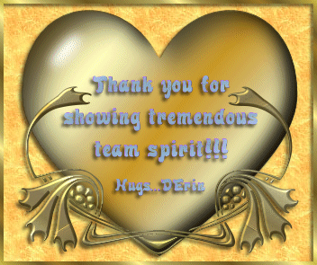
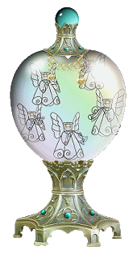
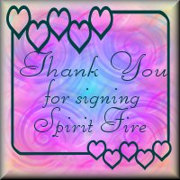
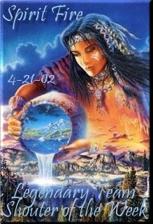
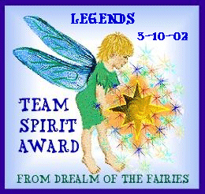
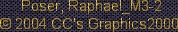
Background, banner an buttons created by Donna
[aka Spirit Fire]
| |